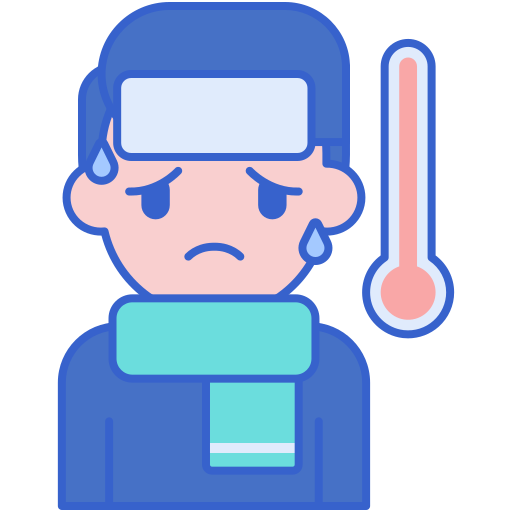
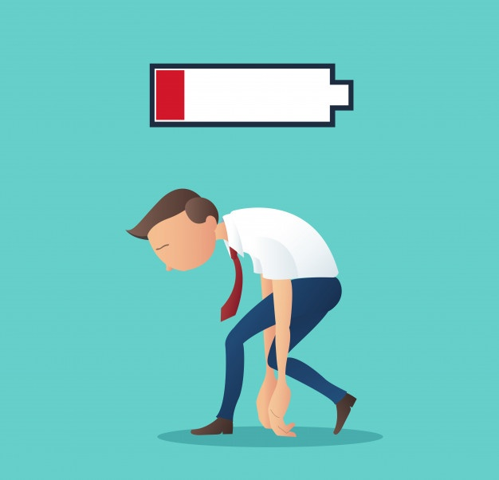

- Symptoms of coronavirus
-
Most common symptoms:
- Fever. 
- Dry cough.
- Tiredness. 
Less common symptoms:
- Sches and pains
- Sore throat
- Diarrhoea
- Conjunctivitis
- Headache
- Loss of taste or smell
- A rash on skin, or discolouration of fingers or toes
Serious symptoms:
- difficulty breathing or shortness of breath
- chest pain or pressure
- loss of speech or movement
Seek immediate medical attention if you have serious symptoms. Always call before visiting your doctor or health facility. People with mild symptoms who are otherwise healthy should manage their symptoms at home. On average it takes 5–6 days from when someone is infected with the virus for symptoms to show, however it can take up to 14 days.